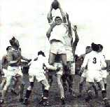

Welcome to my site on Cork Constitution.
My site is designed to give the reader information about the Cork Con Rugby Club.
The different pages are there to give any information that someone interested in the club could need.
The main audience for my site will be rugby fans. In particular Cork Constitution fans.
Hopefully my site will have the right kind of subject matter to keep them interested long enough to look at the whole site.
